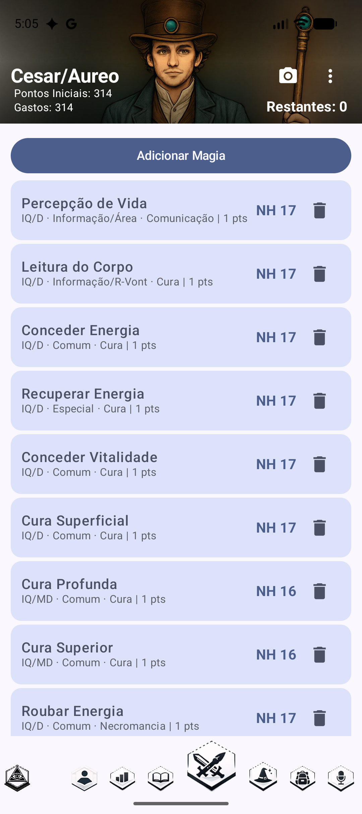
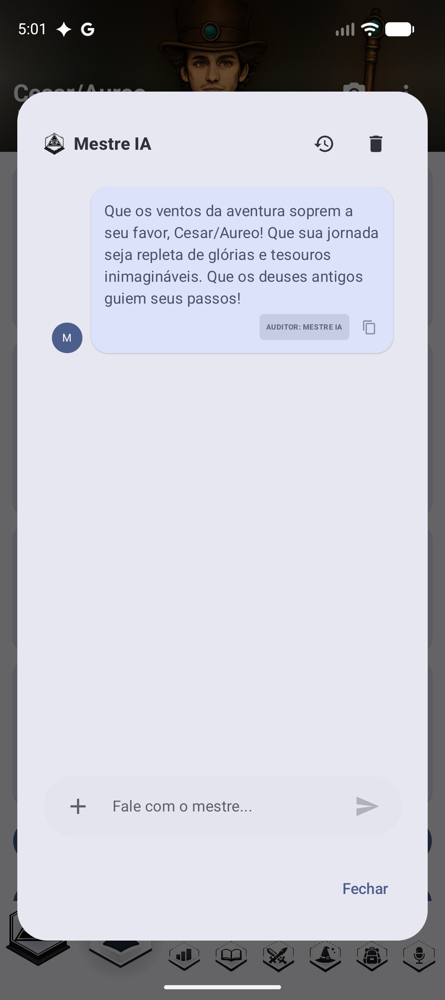

01A aba Rolagem
A tela que fica aberta durante o jogo. Quase tudo aqui é clicável — e boa parte não parece. Toque nos pontos coloridos.

O canal da mesa
Cada rolagem pode ser publicada num canal de Discord, para o Mestre ver o resultado sem ninguém precisar cantar o número.
Arraste o dedo sobre o atributo
Tocar rola contra o atributo. Deslizar para cima ou para baixo muda o modificador da próxima rolagem — sem abrir nada. É o gesto que mais gente não descobre sozinha. Na variante para quem não enxerga há botões no lugar do gesto.
PV é um botão
Abre o diálogo de ferimento: silhueta do corpo, tipo de dano, RD das armaduras vestidas, e a conta inteira. Está sublinhado justamente por isso.
MB p.399-400, 419-422PF também
Marque de onde veio o cansaço — esforço, magia, calor, sede, sono — e o PF desce sozinho. Desmarcando, sobe de volta.
MB p.426-428Esquiva e Apara prontas
Já vêm com escudo, carga, Reflexos em Combate e o que mais existir na ficha. Tocando, você vê de onde saiu cada ponto.
Luz da cena
Escolha a iluminação uma vez; o redutor entra em toda rolagem de visão e de combate — já descontando a Visão Noturna do personagem.
MB p.394, 549Qual apara do turno
A 2ª apara do turno custa −4, a 3ª −8, a 4ª −12, e tudo zera no turno seguinte. O app conta.
MB p.377O NH rola o ataque
Tocar no número rola 3d6 com dados 3D e diz o resultado — sucesso, falha, crítico e por quanto.
GdP e GeB pela ST
A tabela de dano por Força já resolvida, com o botão para alternar entre gume e ponta.
Perícias, Magias, Técnicas
Tudo o que está na ficha, rolável com um toque. A magia já cobra a energia.
Reação e Resistência
O teste de reação com os modificadores sociais somados, e os testes de resistência num lugar só.
MB p.494


02O botão PV — o ferimento inteiro
O Mestre diz “12 de corte no peito”. Isto é o que ninguém faz de cabeça no meio da mesa — e o app faz em dois toques.

Toque onde o golpe acertou
A silhueta tem 16 regiões, com lado — braço esquerdo e direito são coisas diferentes quando um deles é decepado. O primeiro toque dá zoom; o segundo escolhe.
Os órgãos vitais são um lugar à parte
O buraco no meio do tronco não é falha de desenho: vitais têm regra própria — ×3 para perfurante e perfuração, e −5 no teste de queda.
MB p.399Voltar ao corpo inteiro
O zoom navega entre quatro recortes: corpo todo, rosto, tronco com braços e virilha, e a parte de baixo.

Doze tipos de dano
A tabela completa da p.380: contusão, corte, perfuração, as quatro subclasses de perfurante, queimadura, corrosão, toxina, fadiga e atribulação. Fadiga desconta PF, não PV. Atribulação não tira ponto nenhum — vira teste de HT.
MB p.380A RD sai das armaduras que ele está vestindo
A ficha sabe o que ele comprou e o que cada peça cobre — e comprar não é vestir. Cada peça tem a sua caixinha, e a marca fica salva.
Armadura flexível avisa
O asterisco do livro quer dizer que o golpe barrado ainda machuca por impacto. O app calcula esse trauma quando a peça segura o golpe inteiro.
MB p.380Choque do próximo turno
Igual aos PV perdidos, com teto de −4 — e o app já diz que não afeta as defesas, que é a metade da regra que todo mundo esquece.
MB p.419-421Teste de HT contra queda
Ferimento grave é lesão acima de metade do PV inicial num golpe só. O app percebe, avisa e aplica o modificador do local — −5 no rosto e vitais, −10 no crânio.
MB p.420-421A conta aparece escrita
12 − RD 1 = 11 × 1.5 = 16. Automação que não se explica é caixa preta —
e num jogo de regras, quem não confere não confia.
03Equipamento — o catálogo do livro por dentro
150 armas, 72 armaduras e 7 escudos, com todas as estatísticas. Tocar num item do catálogo não o compra: abre a ficha técnica.

Todos os modos de ataque
A Alabarda tem três, e o dano de cada um já vem resolvido com a Força do personagem:
GeB+5 corte vira 1d+4 corte. E avisa que o segundo modo é a
mesma arma — não custa nem pesa de novo.
A sigla vem traduzida
13‡ / 12 não diz nada sozinho. Aqui vem escrito: usa as duas mãos, fica
despreparada depois de atacar, a não ser que a sua ST seja 1,5× a exigida.
Cada número explicado
O asterisco do alcance exige uma manobra Preparar. 0D no Aparar quer dizer
arma desbalanceada: aparou, não ataca no mesmo turno.
A nota de rodapé por extenso
O catálogo guarda só [2]. O app mostra o texto: “pode ficar presa;
veja Picaretas”. Número de rodapé sem o rodapé não informa nada.
Só então entra na ficha
Dois toques em vez de um — para ninguém comprar uma arma sem descobrir que ela pesa 6 kg e exige ST 13.

Peso somado quando há mais de um
2x · 0.25 kg cada · total 0.5 kg. Com um item só, aparece só o peso —
repetir o mesmo número três vezes gastava linha à toa.
Quatro linhas por item, sempre
Nota comprida termina em reticências. Sem isso, um item de dez linhas ocupava mais tela que os quatro acima dele juntos — e a lista deixava de ser lista.
O lápis mostra tudo
Abre o item com a mesma ficha técnica do catálogo em cima e os campos embaixo — inclusive RD na armadura e BD no escudo, que é por onde entra a peça encantada.
ST mínima
Arma pesada demais para o personagem aparece em vermelho, dizendo o que custa: “Falta ST 3: −3 no ataque e 1 PF a mais”.
Qualidade da arma
Barata, boa, superior, altíssima. O bônus entra no dano — e só em lâmina: uma maça superior não bate mais forte.
Armadura por local
Uma peça de tronco e virilha pode entrar só num dos dois, com peso e custo divididos.
Sobrepor armaduras
Avisa quando o livro não permite empilhar, e cobra o −1 na DX da camada extra.

04Geral — o personagem

O custo de cada atributo
O colchete embaixo do número mostra quantos pontos aquele atributo custou — e o topo da tela soma tudo e diz o que sobra.
Secundários calculados
PV, Vontade, Percepção e PF saem dos primários, mostrando a base e o quanto foi comprado por cima.
O triângulo ao lado de “Desloc.”
Toque e abre todos os deslocamentos: correndo, nadando, voando, rastejando, saltando. A seta é discreta e a maioria não a vê.
Dano por Força
GdP e GeB já resolvidos pela tabela do livro.
Definir Base
Fixa a base a partir da qual os custos passam a ser contados — útil quando o personagem evolui e você quer saber o que foi gasto depois.
05Traços, perícias e técnicas
272 vantagens, 218 desvantagens, 281 perícias e 118 técnicas — com o custo calculado e os modificadores aplicados.


Elas não ficam só na lista
Reflexos em Combate aparece no Bloqueio. Sorte vira botão na Rolagem. Visão Noturna desconta a penalidade de luz sozinha.
Incompatibilidade
O app avisa quando dois traços não podem conviver, e quando um passa do teto de nível.
Modificadores
218 ampliações e limitações, com a porcentagem aplicada ao custo final.
Autocontrole
O número de autocontrole das desvantagens vira teste rolável.
06Magia

O NH de cada magia, pronto
Sai da Aptidão Mágica e dos pontos gastos. Nenhuma conta na mão.
Escola, classe e dificuldade à mostra
IQ/D · Informação/Área · Comunicação | 1 pts — tudo que decide como a
magia é lançada, sem abrir nada.
Toque no nome para a descrição
Abre o texto completo da magia, com duração, manutenção e tempo de execução.
Adicionar Magia
Busca nas 879 magias do livro de Magia, com os pré-requisitos conferidos: o app avisa quando falta uma magia exigida por outra.
A aba só existe se houver Aptidão Mágica
Quem não é mago não vê tela vazia. E ao rolar pela aba Rolagem, a energia é cobrada sozinha — se a magia tem custo variável (“1 a 3 PF”), o app pergunta quanto antes de rolar.
07O Mestre de Regras e a Saga
O Módulo Básico inteiro em texto dentro do app — e uma IA que responde citando a página.

O ícone do olho, no canto
Abre o Mestre de Regras de qualquer aba. Pergunte uma regra e ele responde lendo o livro que está dentro do app — não de memória.
Perguntar em português comum
“Quanto custa aparar duas vezes no mesmo turno?” — e vem a resposta com a página.
Histórico e limpar
A conversa fica salva; o balde apaga.
GURPS Saga
Uma campanha conduzida por IA: gênero, dificuldade, nível tecnológico e se há magia no mundo. O Narrador descreve a cena e responde às suas ações.
Combate tático
Grade de hexágonos com tokens e NPCs — e dá para falar com o Narrador durante o combate: a ação improvisada vira mecânica.
08O que está automatizado, regra por regra
Sessenta regras do livro implementadas como código puro e testável, cada uma com a sua página. Esta é a lista que existe para nada ser reimplementado por engano.
| Regra | Onde mora | Módulo Básico |
|---|---|---|
| Ferimento por local do corpo | FerimentoPorLocalRules | p.399-400, 419-422 |
| Tipos de dano (12) | TiposDeDano | p.43-44, 379-380 |
| Trauma por impacto | TraumaPorImpacto | p.380 |
| Corrosão na armadura | CorrosaoNaArmadura | p.380 |
| Cobertura da armadura | CoberturaDaArmadura | p.379 |
| Sobrepor armaduras | CamadasDeArmadura | p.287 |
| Qualidade da arma | QualidadeDaArma | p.275-276 |
| ST mínima da arma | StMinimaDaArma | p.271 |
| Ficha técnica da arma | FichaTecnicaDaArma | p.270-272, 508 |
| Ficha técnica da armadura | FichaTecnicaDaArmadura | p.283-286 |
| Ficha técnica do escudo | FichaTecnicaDoEscudo | p.288, 484 |
| Notas da tabela de escudos | NotasDoEscudo | p.288 |
| Locais de ataque | LocaisDeAtaque | p.398-400 |
| Modificadores de combate | ModificadoresDeCombate | p.547-549 |
| Golpe rápido e apara repetida | GolpeRapidoEAparaRules | p.371, 377 |
| Avançar e atacar | AvancarEAtacarRules | p.366 |
| Apontar | ApontarRules | p.270, 364, 373 |
| Tiro contínuo | TiroContinuoRules | p.407-409 |
| Tamanho do alvo | TamanhoDoAlvoRules | p.549-550 |
| Velocidade e distância | TabelaVelocidadeDistancia | p.550-551 |
| Alcance do ataque | AlcanceDoAtaque | p.271 |
| Iluminação da cena | IluminacaoRules | p.394, 549 |
| Fadiga e recuperação | FadigaRules | p.426-427 |
| Marcos de PV e PF | MarcosDeVidaRules | p.419 |
| Queda | QuedaRules | p.430-432 |
| Fôlego | FolegoRules | p.356 |
| Reação | ReacaoRules | p.494 |
| Resistência | ResistenciaRules | p.365, 419-424 |
| Sentidos | SentidoRules | p.358 |
| Sorte | SorteRules | p.90-91 |
| Talento instintivo | TalentoInstintivoRules | p.92 |
| Visualização | VisualizacaoRules | p.99 |
| Autocontrole | AutocontroleRules | p.120 |
| Estados temporários | EstadosTemporarios | p.137-158 |
| Incompatibilidade de traços | IncompatibilidadeDeTracos | p.124-162 |
| Teto de atributo | TetoDeAtributoRules | p.19 |
| Teto de nível do traço | TetoDeNivelDoTraco | p.91, 151, 159 |
| Deslocamentos | DeslocamentosRules | p.17, 19, 39, 91 |
| ST e DX braçais | StBracalRules, DxBracalRules | p.56, 89 |
| ST especializada | StEspecializadaRules | p.65, 88 |
| Mão inábil | MaoInabilRules | p.14, 157 |
| Energia das magias | MagiaEnergiaRules | Magia p.236-241 |
| Modificador de equipamento | QualidadeDoEquipamento | p.346 |
| Familiaridade cultural | FamiliaridadeCulturalRules | p.24 |
| Origem de cada número | OrigemDosNumeros | p.17, 375 |
09O que o app não faz
Registrado de propósito — tanto para não prometer o que não existe quanto para não procurarmos o que não está lá.
| Não automatizado | Por quê |
|---|---|
| Multiplicador de preço por qualidade de arma | depende do NT da campanha, que a ficha não guarda |
| Teste de quebra ao aparar arma pesada | a qualidade já está guardada; falta a rolagem |
| Redutores de reação por usar armadura | a exceção do livro é julgamento humano |
| Tempo de vestir e tirar armadura | só importa em combate por turno |
| Sangramento | não modelado |
| Custo de vida mensal | fora do que se usa na mesa |
| Aplicar a corrosão na peça sozinho | o app não sabe qual peça o ácido atingiu — mostra o número e você decide |
| Montaria, regras especiais por arma, perigos de ambiente | adiados |